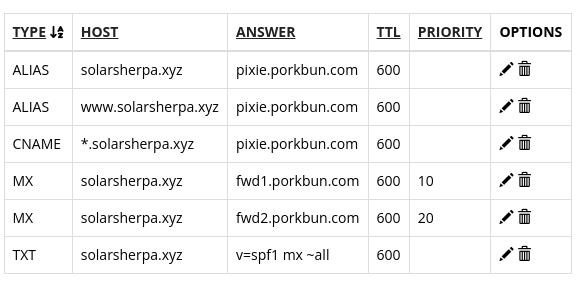

Initial setup for creating a website
Contents
Initial setup for creating a website¶
Step 1 - getting a domain name¶
TODO
Step 2 - getting a virtual private server (VPS) and initial setup¶
Buy a cheap VPS from somewhere. The best deal I found was from contabo.de - i got their absolute cheapest VPS. follow their steps and when you are done, you should get an email with the IP adrress of the VPS ( the password is typically set at the time of signup + purchase). In contabo, I could choose in advance the OS i wanted and I chose Ubuntu 20.04
first login
ssh root@your_server_ip
it is a good idea to create a user and NOT operate from root.
adduser johndoe
The new user should still have access to sudo priviliges
adduser -aG sudo johndoe
pre-step: allow firewall (ufw) to keep ssh ports open
ufw allow OpenSSH
main-step: enable firewall
ufw enable
logout - vps bare setup is done !
nice to have - setup passwordless access to ssh services.
Step 3 - connecting the domain name to vps.¶
The main idea is to set the A records to point to your VPS.
I followed the page provided by my name registrar ( the chaps who sold you the web domain name) Porkbun. The details can be found here.
The basic steps are :
find existing DNS records link
remove existing DNS records for ALIAS and CNAME ( the image below is what I had as default)

Add a “A - Address record” once - in this case, the host is “www”. The address is the IP address of the VPS
Add an another address record “A - address record” - in this case, leave the host blank. The address is the same as that of the VPS.